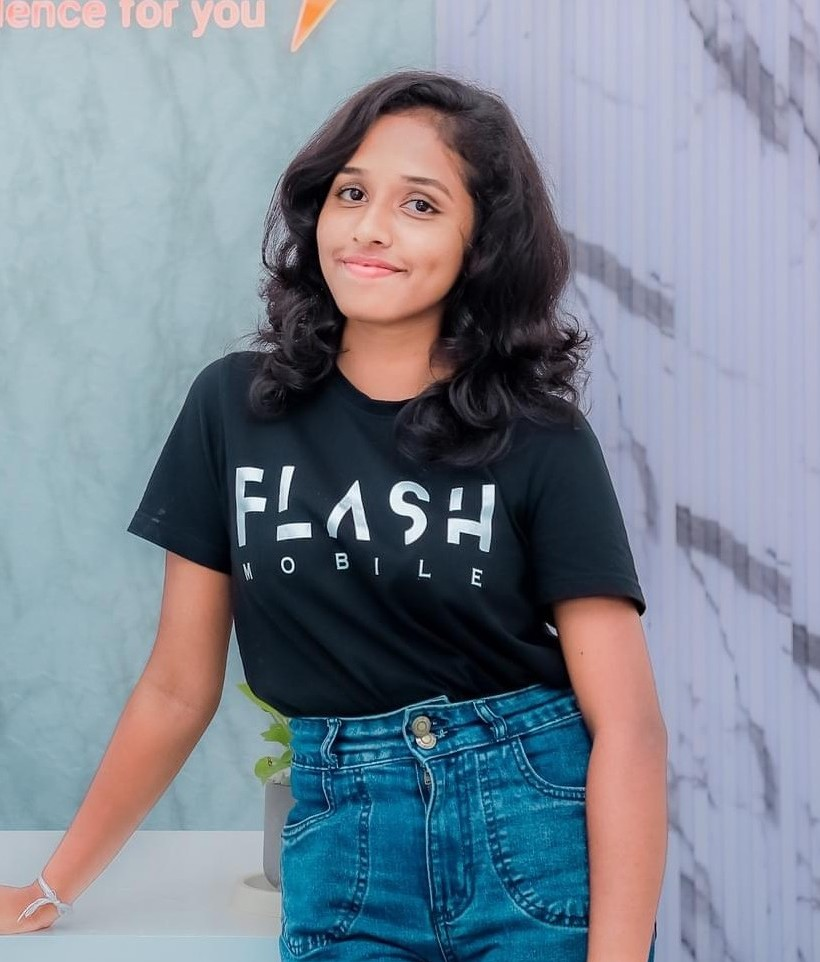
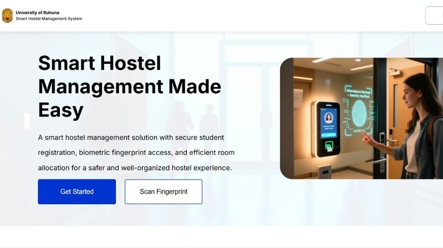
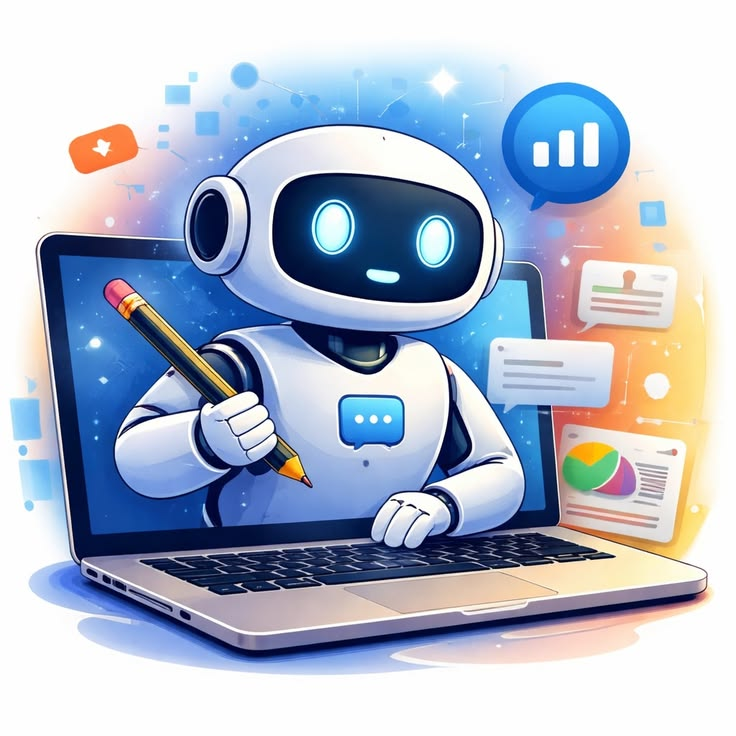
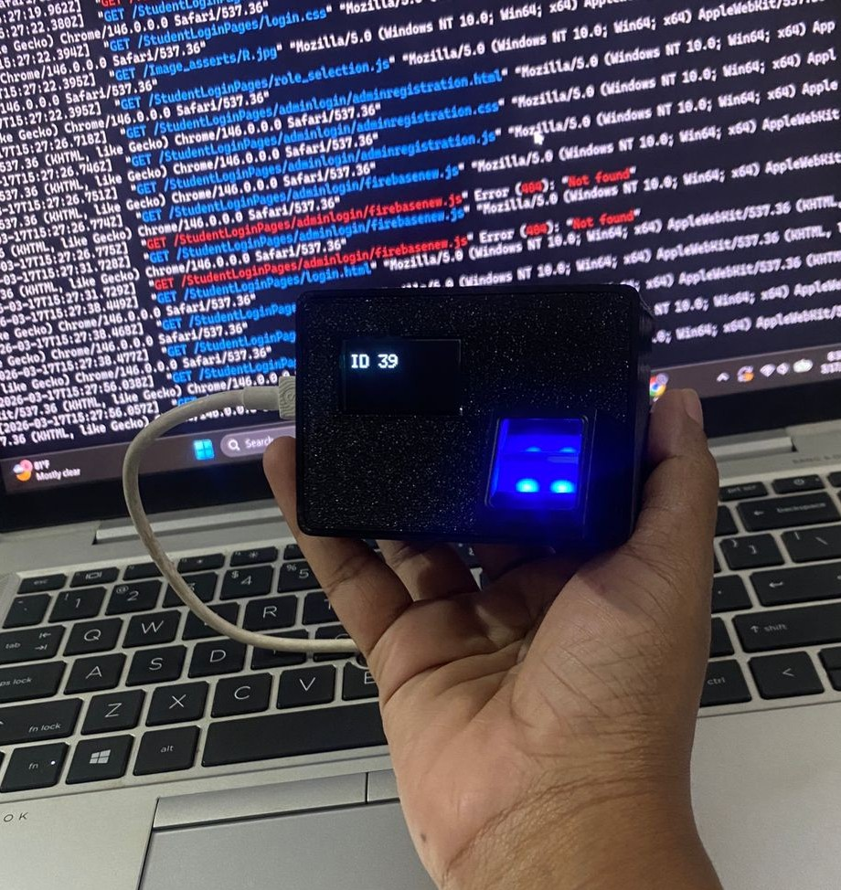
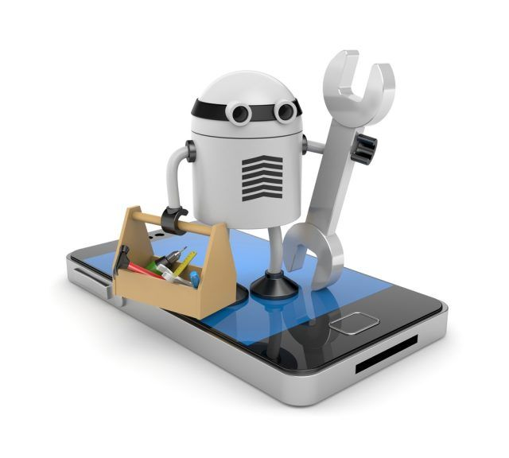

Final-Year IT Undergraduate • University of Ruhuna
Hi, I’m
Samadhi
Edirisinghe.
Aspiring Business Analyst
An aspiring Business Analyst and versatile IT undergraduate turning ideas, user needs and technology into meaningful digital solutions.
I enjoy understanding real problems, communicating with people, designing user-friendly experiences and building technology solutions that create practical value.
Open to IT Internship Opportunities
ABOUT ME
More Than Code — I Connect
More Than Code — I Connect
People, Ideas and Technology
Hi, I’m Samadhi, a final-year Bachelor of Information Technology (Honours) undergraduate at the University of Ruhuna, Sri Lanka.
My academic journey has allowed me to explore business analysis, requirement engineering, software development, UI/UX design, human-computer interaction, databases, project management, research and IoT-based systems.
Although Business Analysis is my strongest career interest, I am excited to contribute across different areas of the IT industry. I enjoy understanding user needs, communicating ideas clearly, collaborating with teams and transforming problems into practical digital solutions.
Beyond technical knowledge, I bring confidence, creativity, positivity, presentation skills, leadership and a genuine interest in working with people.
“I believe the best technology begins with understanding people.”
Looking For
WHAT I BRING TO THE TABLE
Qualities I Bring to Every Team
Analytical Thinker
Understands problems deeply before selecting solutions. I approach every challenge by first listening, observing and breaking down complex situations into manageable insights.
Confident Communicator
Communicates through discussions, presentations, documentation and teamwork. I express ideas clearly and adapt my communication style to different audiences.
Creative Problem Solver
Combines logic and creativity to find innovative solutions. I believe the best answers come from balancing analytical thinking with imaginative approaches.
Human-Centered Thinker
Considers user needs, emotions, behaviour and experience. Technology should serve people, and I always begin with understanding the human behind the screen.
Positive Team Player
Brings energy, responsibility and encouragement to every team. I thrive in collaborative environments and believe shared success is the best success.
Curious Learner
Enjoys new tools, technologies, research and challenges. I am driven by genuine curiosity to understand how things work and how they can work better.
TECHNICAL SKILLS
Tools, Technologies & Methods
A growing collection of skills developed through academic projects, research, teamwork and continuous learning.
Requirement Gathering
Requirement Analysis
Requirement Documentation
Functional Requirements
Non-Functional Requirements
Stakeholder Communication
User Stories
Use Cases
Process Analysis
System Analysis
UML Fundamentals
HTML
CSS
JavaScript
Java
Node.js
Firebase
MySQL
REST API Fundamentals
Responsive Web Design
Frontend Development
Basic Backend Development
Figma
Wireframing
Prototyping
User Flow Design
Interface Design
Human-Centered Design
Usability Thinking
Accessibility Awareness
Design Thinking
Visual Studio Code
Git
GitHub
Firebase
Canva
Microsoft Office
Google Workspace
AI Productivity Tools
Literature Review
Research Documentation
Data Collection
Academic Presentation
Report Writing
Analytical Thinking
Basic Data Interpretation
SKILLS BEYOND THE SCREEN
What I Bring Beyond Technical Knowledge
SELECTED WORK
Projects That Turned Ideas Into Reality
Every project represents a real problem, thoughtful analysis, teamwork, creativity and continuous learning throughout my academic journey.

CompletedSmart Hostel Management System
A smart hostel management solution designed to simplify student registration, room allocation, attendance, check-in and check-out, and hostel administration.
My Contribution
Requirement analysis, dashboard UI design, frontend development, Firebase integration, Fingerprint module , warden dashboard, documentation and team collaboration.
Student Registration
Room Allocation
Fingerprint Attendance
Real-Time Data
HTML
CSS
JavaScript
Firebase
ESP32

Academic ProjectStudent Assistant Mobile Application
A student-focused mobile application designed to support academic organisation, task management, productivity and everyday university activities.
Task Management
Student Productivity
User-Friendly Design
Academic Support
Mobile UI
Figma
Prototyping
User Flows

Completed
Concept Project
RESEARCH & LEARNING
Research, Curiosity and Continuous Learning
Exploring how technology, people and business can connect to solve meaningful real-world problems.
Published Research
The Role of Information Technology in Enhancing Small Business in Sri Lanka
This research explored how information technology adoption supports the growth, efficiency and competitiveness of small businesses in Sri Lanka. It examined digital tools, barriers to adoption and the transformative potential of technology in business operations.
Research Objective
To investigate the current use of IT adoption among small businesses in Sri Lanka, identify key barriers and propose practical strategies for using technology to improve business operations and growth.
Literature Review
Data Collection
Research Documentation
Academic Presentation
Analytical Thinking
MY JOURNEY
My Learning Journey
My journey is a lifelong commitment to learning. Every challenge inspires me to grow and every day I seek new knowledge to expand my skills and perspective
2022–2026
Bachelor of Information Technology (Honours) Special Degree
University of Ruhuna
Studying Business Analysis, Software Development, Human-Computer Interaction, System Analysis and Design, Database Management, Project Management and Research.
Final-Year Undergraduate
2025
Oracle Cloud & AI Certifications
Oracle University
Completed professional certifications covering Oracle Cloud Infrastructure fundamentals and foundational Artificial Intelligence concepts.
2019
Diploma in English (DIE)
ESOFT Metro Campus
Completed a comprehensive English language programme that strengthened professional communication and presentation skills.
View Certificate
2019–2021
G.C.E. Advanced Level
Veyangoda Bandaranayake Central College
Completed secondary education before beginning my journey in Information Technology.
EXPERIENCE & GROWTH
My Growth Through Learning and Experience
Began My IT Journey
Started the Bachelor of Information Technology degree and began exploring software, systems and business needs.
Academic Project Experience
Worked on software projects that strengthened teamwork, requirement analysis and technical problem-solving.
UI/UX and System Design
Designed interfaces and prototypes using Figma while applying human-centered design principles.
IoT and Hardware Integration
Worked with Firebase, IoT devices and fingerprint sensor technology for smart identification projects.
Team Collaboration and Presentations
Participated in team projects, academic presentations and collaborative development environments.
Research and Publication
Conducted academic research and published a paper at the 10th Ruhuna Arts Students’ Annual Sessions.
Portfolio Development
Designed and developed a professional portfolio to present my projects, skills and academic growth.
Seeking an IT Internship
Actively seeking an internship where I can apply my knowledge, learn from professionals and contribute to real-world projects.
BEYOND THE CLASSROOM
Experiences That Shape Who I Am
My interests beyond technology have helped me become a more confident, creative, adaptable and collaborative person.
Event Hosting
Hosting university events and ceremonies has developed my confidence, audience engagement, quick thinking and professional communication skills.
Confidence & CommunicationDancing & Cultural Performance
Performing in university cultural events has strengthened my discipline, creativity, teamwork and stage confidence.
Creativity & DisciplineAcademic Presentations
Presenting research findings and technical concepts has strengthened my ability to explain ideas clearly to different audiences.
Clear CommunicationDubbing & Voice Work
Voice acting and dubbing activities have developed my voice control, expression, creativity and confidence.
Expression & CreativitySwimming
Regular swimming supports consistency, resilience and mental clarity while encouraging balance and discipline.
Resilience & ConsistencyAdventure & Exploration
Outdoor adventures and exploring new environments have developed adaptability, curiosity and confidence.
Adaptability & Curiosity
PROFESSIONAL GALLERY
Moments That Shaped My Journey
A collection of academic, creative, leadership and personal experiences that reflect my growth beyond the classroom.
THE PERSON BEHIND THE PORTFOLIO
The Person Behind the Portfolio
I am not only interested in technology. I enjoy activities that help me communicate, create, perform, explore and connect with people. These experiences have shaped the confidence, positivity, adaptability and energy I bring to a team.
Hosting
Communication
and confidence
Public Speaking
Clear expression
Dancing
Creativity,
discipline and teamwork
Dubbing
Voice control and
expression
Knowledge Seeker
Consistency and
resilience
Adventure
Adaptability and
curiosity
Positive Mindset
Team
encouragement
ACHIEVEMENT STATISTICS
Snapshot of My Journey So Far
Projects
Paper
Design & IoT
INTERNSHIP CALL TO ACTION
Looking for an Enthusiastic IT Intern?
I am currently seeking an internship where I can apply my knowledge, learn from experienced professionals, contribute to real projects and grow within a collaborative team.
CONTACT
Let’s Build Something Meaningful
Whether you are offering an internship opportunity, looking for a project collaborator or simply want to connect, I would be happy to hear from you.
Email
samadhi.edirisinghe30@gmail.com
LinkedIn
Connect with me
GitHub
View my repositories
Location
Colombo, Sri Lanka
Open to Opportunities
I welcome internship opportunities, career conversations, project collaborations and professional networking.
Open to IT Internship Opportunities